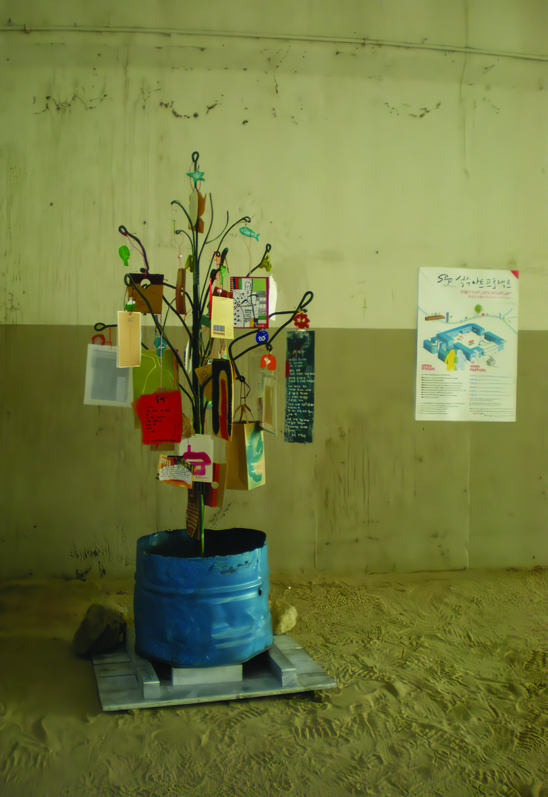

이숙희 - 시나무(Poem Tree)

2008년 8월부터 10월까지 드나들었던 카페 리자드.
SAP 참여 작가들을 비롯해 여러 사람들로 분주했던 SAP 사무실, 작업실.
시간이 흐르면서 함께 했던 기억도 희미해질 테지만 절대 희미해지지 않을 기억들을 떠올려 봅니다. 처음 SAP 분위기에 잘 섞이지 못했던 나를 따듯한 배려로 이끌어주신 털보 김석용 선생님, 그렇게 많은 이야기를 나누지는 못했지만 사랑스런 윤진씨, 꼭 한 번 다시 술자리를 하겠다는 약속은 잊지 않았지요.
언제나 다감했던 장형순 작가님, 슬쩍 친절한 권진수 작가님! 아! 놓쳐서는 안되지 스푸트니크 1호 송과 보람의 귀여운 웃음 소리들, 그리고 그 곳에서 만난 황경애 시인, 숲 해설가 이 ○○님, 든든한 박관장님과 단란한 그의 가족들.
내 시나무를 보자 '와우'를 수 없이 외쳐댄 독일 시인이자 작가인 랑한슨에겐 따끈한 한 그릇 사드릴 걸!
연약한 권자연님에게서 뿜어져 나오던 튼튼한 뚝심, 등등(신기했어요). 자잘한 순간들이 마술사의 모자 속에서 수 없이 따라나오는 색색의 손수건들처럼 또렷합니다.
SAP에 참여하신 모든 작가분들!
예술이 뭐 스포츠는 아니겠지만, 당신들이 생각하는 아름다움에 당신들이 생각하는 예술에 명중하시기를! 응원의 박수도 함께 드립니다. 짝!짝!짝!
SookHee Lee - Poem Tree
I remind myself of cafe 'Lizard', where we spend many hours from August to October, 2008.
Also SAP main office, the workroom, and all the artists who participated in SAP.
The memories of working together will soon fade as time goes by, but they will remain-intact as long as I can remember. Many thanks to 'hairy' Seokyoung Kim, who showed kindness when I could not quite mingle with SAP people. Lovely Yujin, I could not get a chance to talk with you much, but we said we would have a drink again. Hope you don't forget.
And I also express my gratitude to our sweet writer, Hyungsoon Jang and Jinsoo Kwon.
I will not forget Sputnik 1, Song and Boram's laughs, poet Kyung-ae Hwang, forest expert Lee sun im, and the kind support from Pres. Park and his family.
Langen Hans, poet and wirter from Germany, thank you for being awed by my Poem Tree. And I also well remember Ms. Jayeon Kwon's unlikely great power. Those little moments are as vivid as the colorful handkerchief's coming out of a magician's hat.
All the participating artists!
I hope you find own art and make the best of it. My best wishes go to all of you!